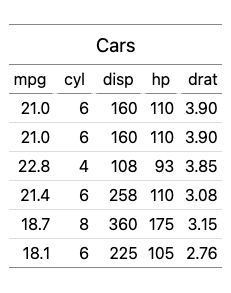

lt_export() saves a table as .html, .pdf, or .png. It needs Node.js or a headless Chromium-based browser for PDF and PNG; the chunk is skipped where neither is available.
library(lt)
tbl = lt(head(mtcars[, 1:5])) |> lt_header("Cars")
can_export = lt:::can_bake()
lt_export(tbl, "cars.png", width = "min-content")
#> [1] "cars.png"
lt_export(tbl, "cars.pdf")
#> [1] "cars.pdf"

1 A table exported to PNG.
A static <table>, with no JavaScript needed to view it, is one more option:
lt(head(mtcars[, 1:5], 2)) |> lt_header("Cars") |>
lt_export(NA, fragment = TRUE, css = FALSE, tidy = TRUE)
<div class="lt-wrap">
<table class="lt-table">
<caption class="lt-caption">
<div class="lt-title">Cars
</div>
</caption>
<thead>
<tr>
<th scope="col" class="al-r">mpg</th>
<th scope="col" class="al-r">cyl</th>
<th scope="col" class="al-r">disp</th>
<th scope="col" class="al-r">hp</th>
<th scope="col" class="al-r">drat</th>
</tr>
</thead>
<tbody>
<tr>
<td class="al-r">21</td>
<td class="al-r">6</td>
<td class="al-r">160</td>
<td class="al-r">110</td>
<td class="al-r">3.9</td>
</tr>
<tr>
<td class="al-r">21</td>
<td class="al-r">6</td>
<td class="al-r">160</td>
<td class="al-r">110</td>
<td class="al-r">3.9</td>
</tr>
</tbody>
</table>
</div>